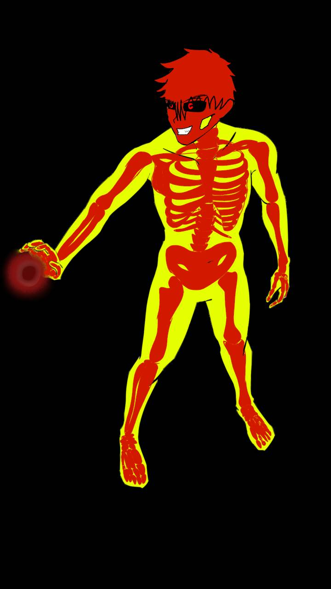
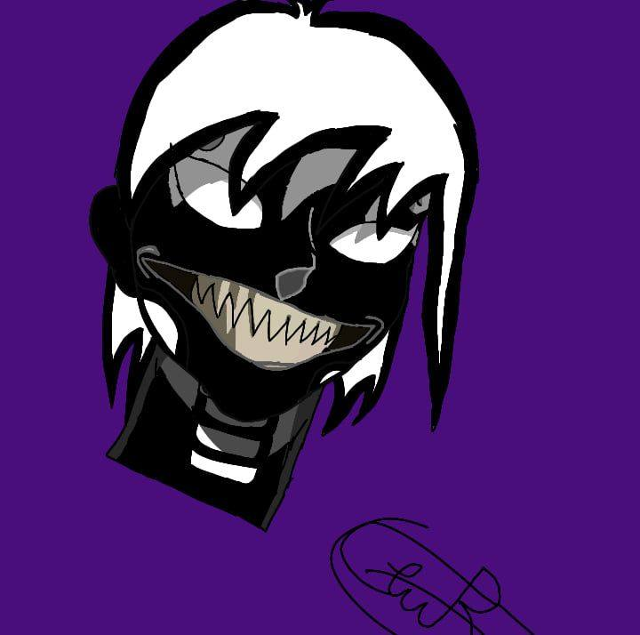

Skeleton en el unniverso Zeta no se sabe nada de el, sólo que es alguien que vivía en la dimensión espejo y que es la contraparte de calavera. Mientras que desde la versión Zero en adelante, es considerado el hermano de Calavera. El hijo en el medio, hijo de Dark Bones(su padre demonio) y Evangeline(su madre humana fallecida). Skeleton en las cronicas de las versiones zeta,1 y 2, tiene un hijo llamado Damián que, Skeleton al casarse con una humana, Damián es semi-demonio. Skeleton decidió que su nombre de humano fuera Ethan Marrow. Actualmente no se le ha dado una edad concreta a ningún personaje. 
[null]
